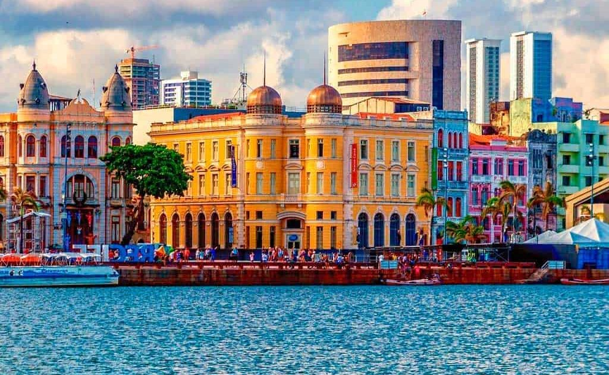

Bem-vindo a Recife
Recife é um município brasileiro, capital do estado de Pernambuco, localizado na Região Nordeste do país.
O que fazer em Recife! Confira algumas dicas.

Marco Zero
O Marco Zero no Recife Antigo é um dos pontos turísticos mais importantes para quem deseja conhecer a capital de Pernambuco. Isso porque é um local de importância histórica que conta o nascimento da cidade e possui forte referência cultural.
Além disso, o Marco Zero recebe, anualmente, diversas comemorações e manifestações e também é um lugar muito famoso para quem busca eventos como o Carnaval.